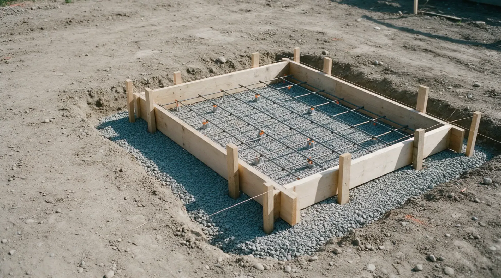
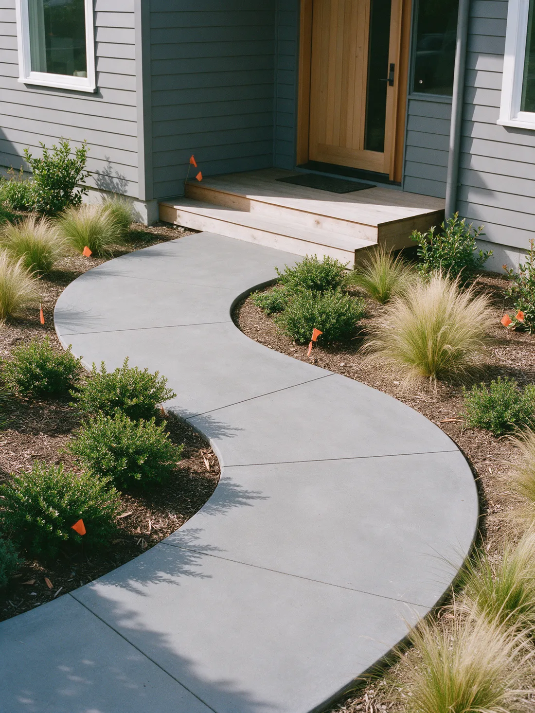

Concrete doesn't do second chances.
Specialty Concrete Construction installs, repairs and refinishes concrete for homes and businesses in Scottsdale and the Greater Phoenix area. In business since 1987.
A truck of concrete gives you about ninety minutes.
Then it starts to set. No undo. No second pour.
Skip the prep, add a little water, rush the finish, and you'll see it in the cracks for years.
This is not a weekend project.


The rushed driveway
Water on the base, a hose in the form.
A wet, loose base settles. The slab on top of it follows.
Soupy mix, poured fast.
Extra water makes concrete easy to place and much weaker once it cures.
Then the cracks show up.
No steel, no planned joints, so the slab picks its own places to break.
And then comes the teardown bill.
Breaking out and re-pouring costs more than doing it right once.

Same driveway. Which crew do you want?


How it should go
What a good pour includes.
- Compacted gravel base, graded to drain
- Steel placed where the plan calls for it
- A mix ordered to suit the job
- Placed, screeded and floated on schedule
- Joints cut and the slab cured, not left to chance
Poured right. On schedule.
- Licensed, bonded and insured
- ROC license 068232
- In business since 1987
- Free estimates
- 5.0 stars from 5 Google reviews
What we build.
Pick one to see what is involved.
Concrete Construction
Concrete floors, sealing, staining, stamped, colored and exposed aggregate finishes, and acrylic overlays.
See how we do itDriveway
Concrete driveway installation and driveway repair.
See how we do itGarage Floor
Garage floor installation, coating, refinishing and epoxy.
See how we do itSidewalks
Sidewalk installation, design and sidewalk repair.
See how we do itPool Deck & Patio
Pool deck and patio installation, resurfacing, stamping, staining and sealing.
See how we do itResidential Concrete
Residential concrete installation for driveways, sidewalks, pools, decks, patios and interior spaces.
See how we do itRepair
Concrete repair for driveways, sidewalks, patios, decks and interior spaces.
See how we do itRefinishing
Concrete refinishing to renew or restore the look of existing concrete.
See how we do itCommercial Concrete
Commercial concrete installation and repair, indoors and out, in Maricopa County and nearby.
See how we do itRemodeling
Concrete floors for new homes and remodeling projects, in a range of styles and colors.
See how we do itNot sure which one you need?
Examples.
Example photos of the kinds of concrete work we do. These are stand-in images, not our own jobs.




How we keep it honest.
Concrete is hard to judge until it's too late to change. So we put the important parts in front of you early.
-
A free estimate.
Call or send the form and you get a free estimate on your project.
-
Experienced workers.
The business only hires experienced and professional workers, so your project turns out right.
-
Licensed, bonded and insured.
Arizona Registrar of Contractors license 068232, shown as active on the state lookup.
-
References on request.
Ask and you can get references from past customers.
Concrete work in the Phoenix area since 1987.
Specialty Concrete Construction is a concrete contractor located in Scottsdale, serving the Greater Phoenix area. It offers concrete flatwork such as slab on grade, patios and driveways, along with repair, refinishing and decorative coatings.
The work ranges from new driveways, sidewalks and patios to pool deck resurfacing, acid staining and sealing, stamped concrete, acrylic flagstone, saw cutting and epoxy. No job is too large or small, and the business starts its jobs in a timely and professional manner.
- License
- ROC license 068232
- Coverage
- Licensed, bonded and insured
- In business
- Since 1987
- Owner
- Melvin Noesges Jr.
Where we work.
Serving Scottsdale and the Greater Phoenix area and the towns around it.
- Scottsdale
- Phoenix
- Maricopa County
- Greater Phoenix area
Not on the list? Call and ask.
Call (480) 941-2812What customers say.
Hover a bubble to read it.Tap a bubble to read it.
5.0 average from 5 reviews. Read them on Google
Mel is TOP NOTCH! I can’t say enough about my experience with Mel and his hard working team. He is professional, on time, clean and very reasonable and best of all he knows exactly what he is doing.
I called Mel for a quote, he provided a prompt response and showed up on time. They always left the job clean and everything back in place.
Mel's work is amazing. He and his crew know exactly what needs to be done. The end result has enhanced our home. I could not be more pleased.
Booking is simple.
-
Call or send the form
Tell us what you want done and where.
-
We look at the job
We look at your concrete and talk through the options.
-
You get a free estimate
A clear quote on your project.
-
We do the work
The job starts in a timely, professional way and ends with you happy with the result.
Questions we hear a lot.
Does Arizona heat change how concrete is poured?
Yes. Heat speeds up setting and makes the surface dry too fast, so pours are planned around the weather and the surface is kept from drying out while it cures.
How long until I can walk or drive on new concrete?
Foot traffic is usually fine after a day or two. Vehicles wait longer. Concrete keeps gaining strength for about 28 days, so ask for dates that fit your job.
Should concrete be sealed?
For most driveways, patios and pool decks, yes. A sealer helps extend the life of concrete and keeps it looking good, and it matters most on stained or etched surfaces.
Can old concrete be refinished instead of replaced?
Often. If the slab is sound, it can be resurfaced, stained or coated for a new look. Deep damage may need a tear-out and re-pour.
Do I need a permit?
It depends on the city and the job. Structural work and anything in the public right of way usually does. Check with your city if you are unsure.
How do I get an estimate?
Call (480) 941-2812 or send the form. The business provides free estimates.
Ready when you are.
Call us, or send the details and we'll call you about your project.